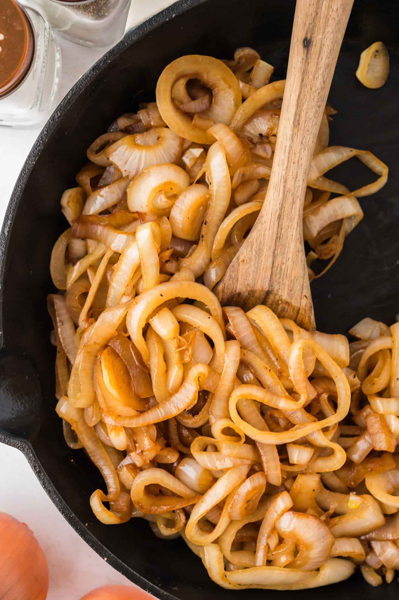
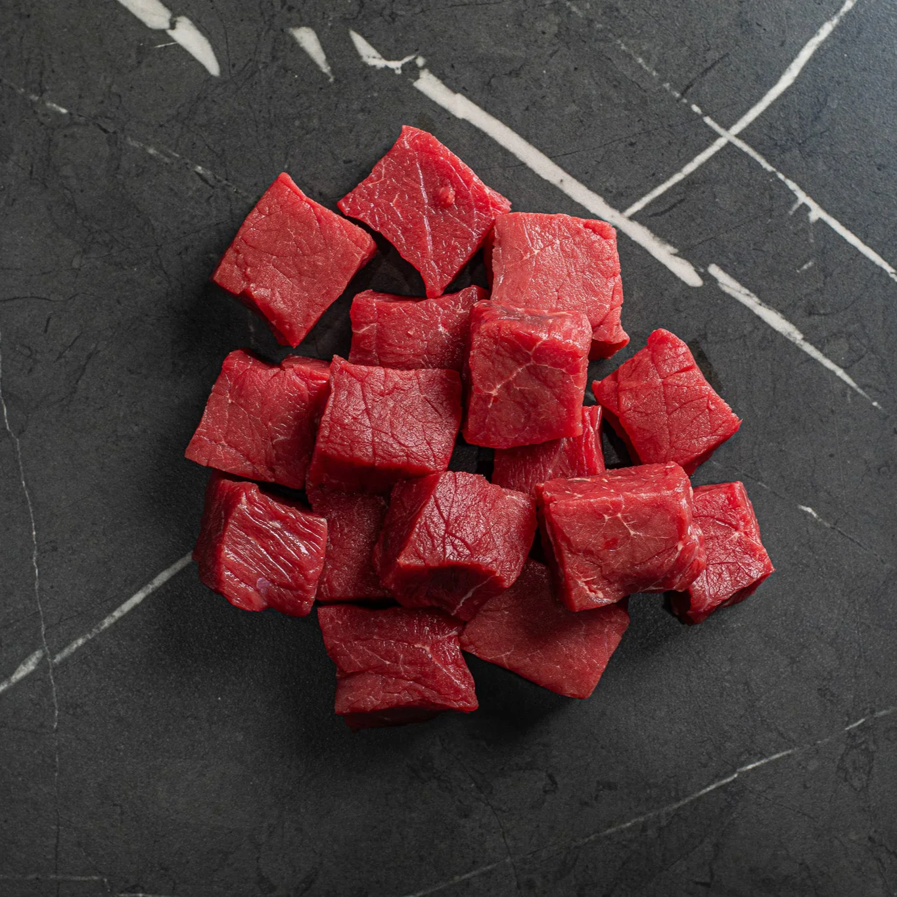
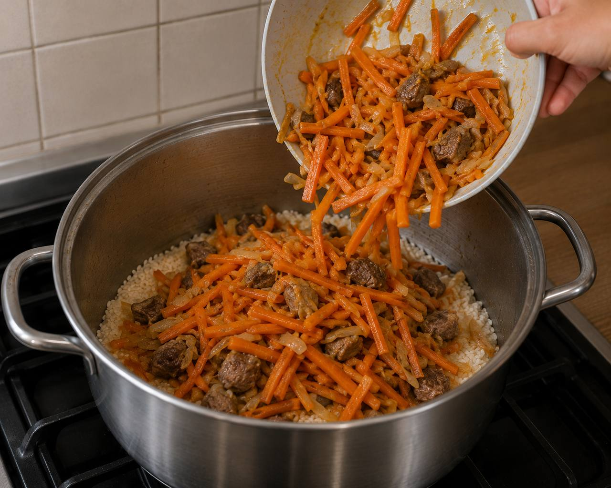
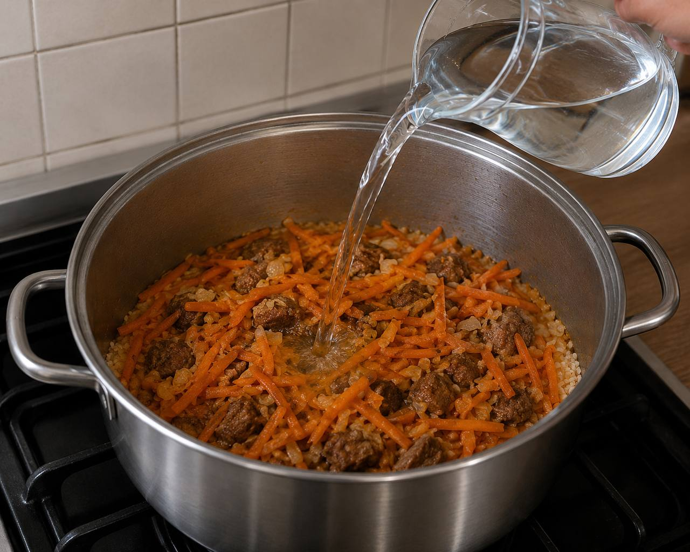
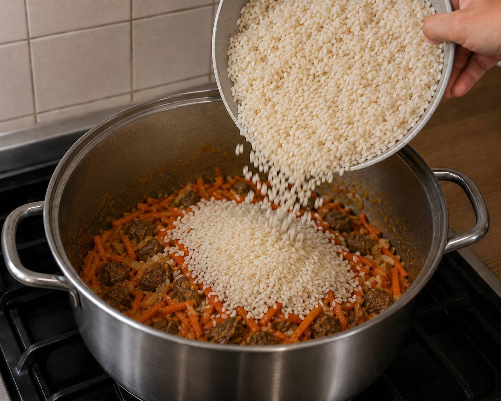

歴史
History
プロフ（パロウ・オシュ）の起源は少なくとも千年以上前にさかのぼり、シルクロードを行き交う商人たちの糧食として発展しました。ナマンガン盆地はその中でも特に古い伝統を持ち、今日まで変わらぬ作り方が受け継がれています。
十四世紀の征服者ティムールは遠征前夜にプロフを兵士たちに振る舞い、士気を高めたと伝えられています。現代でも大鍋で炊くプロフは共同体の絆の象徴であり、祝いの席には欠かせない料理です。
材料
Ingredients — 4人前
子羊肉（肩）
600g
デヴジラ米
400g
または長粒米
黄色人参
300g
なければ普通の人参
玉ねぎ
2個
綿実油
150ml
またはひまわり油
にんにく
1球
丸ごと
クミン
小さじ2
メギの実
大さじ1
あれば
作り方
Instructions
一
油を熱し、玉ねぎを炒める
鋳鉄の大鍋（カザン）に油を入れ、強火で白煙が立つまで熱します。玉ねぎを薄切りにして加え、深いきつね色になるまで約15分炒めます。この工程がプロフの色と甘みを決めます。
15分
01 · Piyoz二

02 · Go'sht肉を加えて焼き付ける
子羊肉を大きめの一口大に切り、鍋に加えます。全面に焼き色がつくまで強火で炒め、肉の旨みを閉じ込めます。塩少々を加え、クミンをひとつかみ手で揉みながら入れます。
10分三
人参を加えて炒める
人参を長めの千切りにして加え、10分ほど炒めます。黄色人参は甘みが強く、橙色の人参と混ぜると色合いが美しくなります。にんにくを丸ごと埋め込み、メギの実を散らします。
10分
03 · Sabzi四

04 · Zirvak水を加えて煮込みのベースを作る
熱湯をひたひたになるまで注ぎ、塩で調味します。この煮込みのベースを「zirvak」と呼びます。中火で20分煮込み、うま味を引き出します。
20分五
米を加えて蒸らす
洗って水気を切った米を平らに広げて加えます。蓋をせず、米が水分を吸うまで中火で炊きます。水気がなくなったら蓋をして極弱火にし、25分蒸らします。仕上げに底から大きく混ぜ、器に盛ります。
30分
05 · Guruch